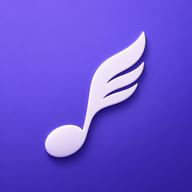
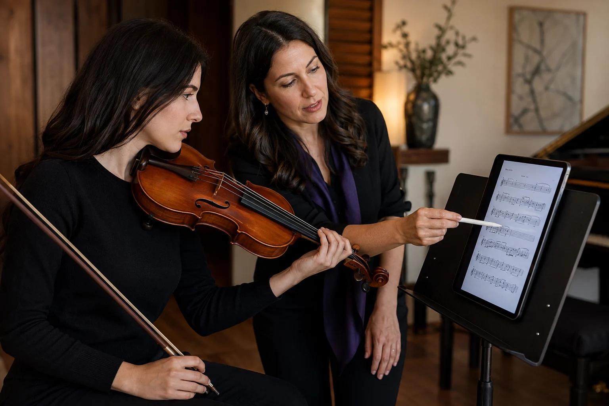
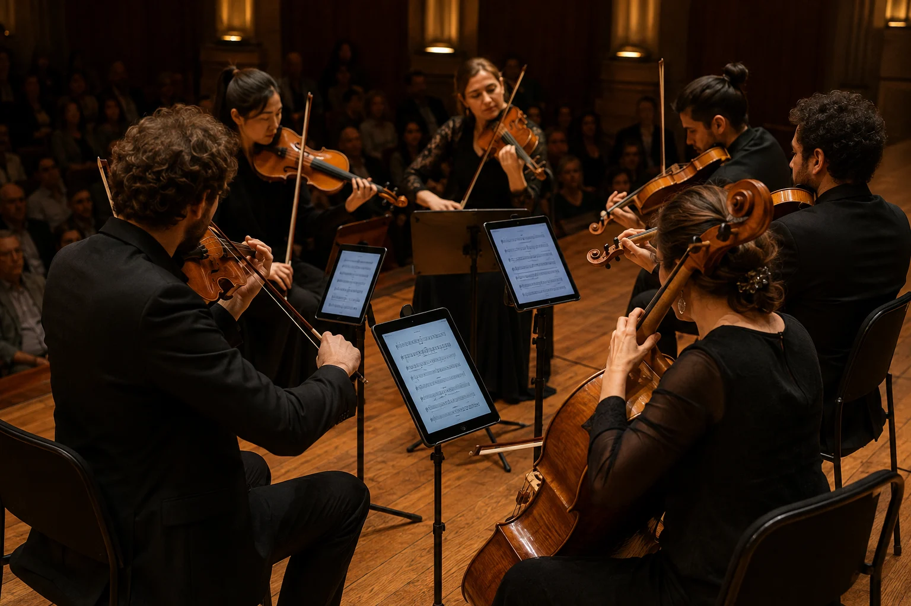
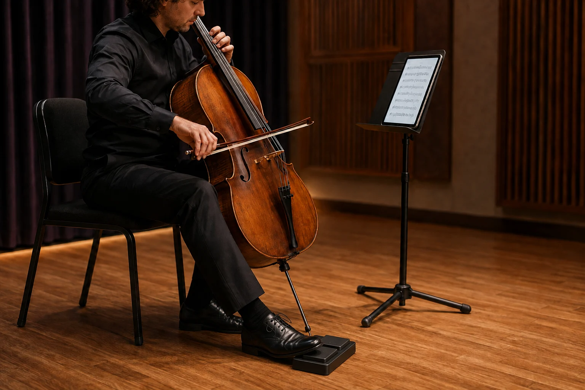

Selkeämpi näkymä musiikkiisi
Lue yhden sivun, kahden sivun tai jatkuvan vierityksen näkymässä. Zoomaus ja nopea sivunavigointi mukautuvat nuotteihisi.

CantaVueOMA TYÖTILASI NUOTEILLE
Ensimmäisestä läpiluvusta seuraavaan esiintymiseen. Kokoa nuotit, merkinnät ja harjoittelu yhteen tilaan, jossa voit keskittyä.
Nyt ilmaiseksi App Storessa · iPad ensin
Katso julkaisu-uutisetPidä jokainen sivu järjestyksessä, jokainen idea lähellä ja harjoituskerrat yhteydessä toisiinsa.
Lue yhden sivun, kahden sivun tai jatkuvan vierityksen näkymässä. Zoomaus ja nopea sivunavigointi mukautuvat nuotteihisi.
Merkitse sormitukset ja musiikillinen ilmaisu kynällä, korostuksilla, tekstillä ja musiikkisymboleilla. Järjestä muutokset tasojen ja historian avulla.
Tuo PDF-tiedostoja, järjestä ne tunnisteilla, suosikeilla ja kirjastoilla ja lisää nuotteja tai sivuvälejä seuraavaan kappalelistaasi.
Kokoa tavoitteet, harjoituspäiväkirja ja paikalliset äänitykset yhteen. Kuuntele uudelleen, pohdi ja jatka tavoitteellisesti eteenpäin.
Nämä ominaisuudet vastaavat nykyistä App Store -julkaisua. Alusta- ja lisävarustetuki vaihtelee laitteen, järjestelmän ja käytössä olevien palvelujen mukaan.
Käytä vähemmän aikaa oikean sivun etsimiseen ja enemmän musiikkiin. Yhdistä valmistautuminen, harjoittelu ja esiintymisten suunnittelu.

VIULUTUNNIT
Merkitse jousitukset, sormitukset ja fraseeraus suoraan nuotteihin, jotta esimerkki ja keskustelu pysyvät samalla sivulla.

YHTYEEN ESITYS
Järjestä kappalelista ja valmistele omat nuottisi ennen lavalle nousua, jotta voit keskittyä enemmän ympärilläsi soivaan musiikkiin.

SIVUNVAIHTO POLKIMELLA
Käytä yhteensopivaa sivunvaihtopoljinta, joka lähettää näppäimistökomentoja, siirtyäksesi edelliselle tai seuraavalle sivulle käsien pysyessä soittimella.
Yhdistä poljin ensin laitteeseesi. Mallien yhteensopivuutta ja käyttökokemusta oikeilla laitteilla tarkistetaan edelleen.
Tekoälyllä tuotettuja käyttötilanteiden kuvituksia, ei sovelluksen kuvakaappauksia tai todellisia asiakastarinoita.
Aloita PDF-tiedostosta ja kokoa ohjelmistosi omaan nuottikirjastoosi.
Merkitse sormitukset, hengitysmerkit ja yksityiskohdat, jotka tekevät jokaisesta läpiluvusta hyödyllisen.
Laadi kappalelista, kertaa vaikeat kohdat ja järjestä sivut.
Merkinnät ja lukunäkymän säädöt säilyttävät alkuperäisen PDF-tiedoston. Kirjasto tallennetaan paikallisesti, ja hallitset itse vientiä ja varmuuskopioita. Tietoja siirretään vain, kun yhdistät palvelun ja käynnistät toiminnon nimenomaisesti. Automaattinen pilvisynkronointi ei ole käytettävissä.
Kyllä — CantaVue on nyt ilmainen App Storessa iPhonelle ja iPadille. Avaa sovelluksen sivu alla olevasta painikkeesta:
Tällä hetkellä keskitymme iPadiin. Projekti tähtää myös iPhone-, Android-, macOS-, Windows-, Linux- ja Web-alustoille. Edistyminen vaihtelee alustoittain; lopullinen saatavuus vahvistetaan julkaisun yhteydessä.
Kuvien ja skannausten tuonti luo PDF-tiedoston lukemista ja merkintöjä varten. Se ei muuta nuotteja muokattavaksi nuottikirjoitukseksi. Nuottien tunnistus on edelleen tutkimusaihe.
Automaattista lähettämistä ei tapahdu. Kirjasto ja synkronoinnin valmistelu pysyvät paikallisina. Voit yhdistää oman yhteensopivan HTTPS-synkronointipalvelun tai WebDAV-tallennustilan ja vahvistaa tuettujen tietojen vaihdon. Muut suorat pilviyhteydet näkyvät vain versioissa, joissa ne on määritetty ja ne ovat käytettävissä. Julkisia CantaVue-pilvitilejä ja automaattista pilvisynkronointia ei ole saatavilla.
App Storen versio 1.0.0 on ilmainen eikä sisällä tällä hetkellä appeja sisäisiä ostoja. Mahdolliset tulevat maksulliset suunnitelmat kerrotaan ennen julkaisua.
CantaVue 1.0.0 on nyt saatavilla App Storessa ilmaisena latauksena iPhonelle ja iPadille. Aloita lukemisesta, merkinnöistä, harjoittelusta ja paikallisista opetustyökaluista; tarkista saatavuus ja järjestelmävaatimukset App Storesta.
Versio 1.0.0 · Ilmainen App Storessa